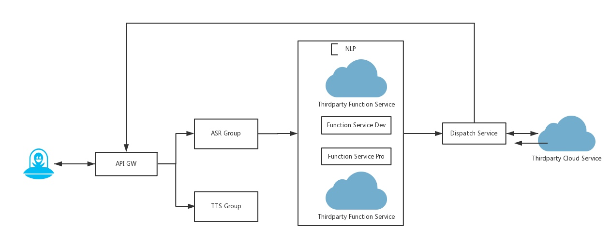

1. 拦截器接口文档
语义理解（NLP）的拦截器（intercepotr），可以允许开发者在进入我们NLP匹配之前或者是asr结果在若琪的NLP处理完成后结果为空时将请求进行拦截，拦截到开发者自己的https拦截器。用户可以在 Rokid 开放平台语音接入板块中的服务接入中设置。
下图是整个语音的后端处理流程图： 
图中的「Thirdparty Function Service」即为https拦截器
1.1. NLP Interceptor
- Request方式: POST
- Request参数:
| 参数名 | 类型 | 描述 |
|---|---|---|
| version | string | 接口版本号 |
| account_id | string | account id,平台管理后台获取 |
| device_type_id | string | 设备类型ID |
| device_id | string | 设备ID |
| sentence | string | 待解析语句 |
| language | string | 语言 |
| stack | string | 当前app |
- Response参数:
| 参数名 | 类型 | 描述 | 默认值 | 必填 |
|---|---|---|---|---|
| app_id | string | skill id | 无 | 是 |
| intent | string | intent | 无 | 否 |
| slots | object | slots | 无 | 否 |